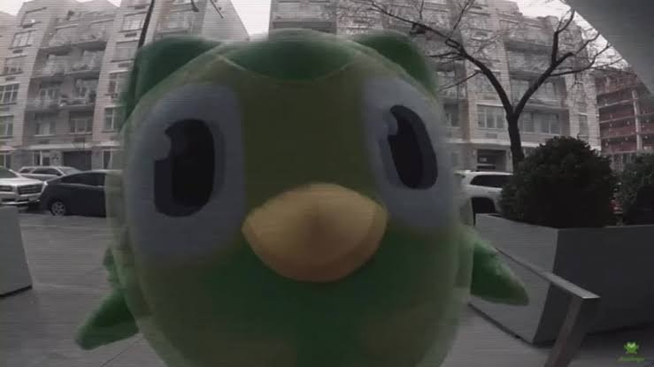
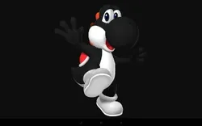
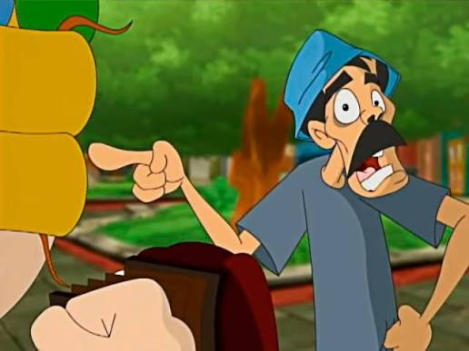

Si llegaste hasta aquí...
Gracias por tomarte el tiempo de leer la carta. Solo quería dejarte un par de detalles por aquí de forma tranquila.
Lo que tenía en mente

El salvavidas de Duolingo
Investigué seriamente cómo automatizar Duolingo para salvarte la racha y que el búho verde no te quite a tu familia. Ese servicio viene incluido si seguimos hablando.

El coaching de Mario Kart
Podría seguir enseñándote a jugar Mario Kart para que siempre ganes usando a Yoshi negro.
El Black Ops
Como me contaste que jugabas Black Ops 2, conseguí el 1 para mostrártelo algún día si te da curiosidad.
La música y la plática
Me quedé con muchas ganas de que me enseñes más de la música que escuchas... y bueno, si algún día se da la oportunidad, esa pedita escuchando a José José creo que si seria un plan muy chido para hacer jajaja.
Una última propuesta
Para que veas que la negociación va en serio:

¿Qué dices?
¿Empezamos desde cero?
Felicidades
Te acabas de ganar formalmente:
Por cierto, no te preocupes: la verdad esta página no me avisa qué respondiste, así que me tendrás que avisar tú para que sepa jajaja.
Cualquier elección que hayas tomado la respeto al 100%. Hice todo esto porque no quería incomodarte hablándote en persona, pero si prefieres que lo platiquemos en persona, yo sin ningún problema.
Sinceramente hice todo lo que se me ocurrió para no perder la oportunidad de conocerte bien, como debí hacerlo desde un inicio. Así que si diste que sí, muchas gracias por la oportunidad y perdón de nuevo por el mal momento que te hice pasar.
El chat se abrirá en blanco para que me digas lo que quieras (o si prefieres en persona).
Una disculpa sincera
Sé que si le diste tantas veces a que no, es porque probablemente la pasaste mal ese día, y de verdad quería pedirte perdón por eso.
Me siento muy apenado porque jamás quise hacerte sentir incómoda ni hacerte pasar un mal momento.
Hice todo esto para intentar sacarte una sonrisa, pero también porque si de verdad prefieres que no sigamos hablando, quería al menos ofrecerte una disculpa sincera por lo que pasó.
Respeto completamente tu decisión y tu espacio.